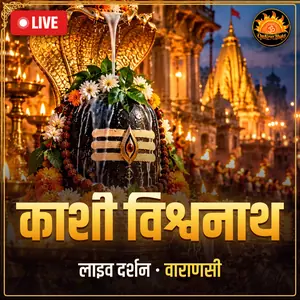

Today's live darshan
Separate page for Kashi Vishwanath live darshan

Source: the temple's official YouTube channel “Shree Kashi Vishwanath Mandir Trust” — the channel in the temple trust's name, which regularly streams ‘live darshan’. All rights to the videos belong to them. Live darshan of all temples
Darshan and aarti timings
| What | Time | Entry |
|---|---|---|
| Mangla aarti | 3:00 am – 4:00 (reporting 2:30) | Gate no. 1, ticket holders only |
| Darshan | 4:00 am – 11:00 | From any gate |
| Bhog aarti | 11:15 am – 12:20 pm | From any gate |
| Darshan | 12:20 pm – 7:00 pm | From any gate |
| Saptarishi aarti | 7:00 pm – 8:15 | From any gate |
| Darshan | 8:30 pm – 9:00 | From any gate |
| Shringar aarti | 9:00 pm – 10:15 | From any gate |
Timings as per the official FAQ of the Shri Kashi Vishwanath Temple Trust.
Tickets and booking
| Service | Fee |
|---|---|
| General darshan | Free |
| Sugam darshan (a shastri takes you in; prasad and locker included) | ₹300 per person |
| Mangla aarti | ₹500 per person |
| Bhog, Saptarishi and Shringar aarti | ₹300 per person |
| Divyang (disabled) devotees | Free, darshan without queuing |
| Children under 12 | No ticket needed |
Booking: shrikashivishwanath.org or the ‘Shri Kashi Vishwanath’ app. Counters: Helpdesk, YSK-1, YSK-2, YSK-3, Mandir Chowk, the temple premises and Dashashwamedh Ghat. Aarti money is treated as a donation, so it cannot be cancelled and the date cannot be changed. Sugam darshan may be closed on Sawan Mondays and big festivals.
Important things before you go
- Nothing like mobiles, smartwatches or pens is allowed inside. Free lockers are at Mandir Chowk, YSK-1, 2, 3 and the Helpdesk.
- There is no fixed dress code, but go in simple, decent clothes.
- Entry from the Ganga ghat side is through gate no. 1; the Helpdesk is near gate no. 4.
- Helpline: 6393131608 (call / WhatsApp), email support@shrikashivishwanath.org.
- Beware of fake websites: many look-alike websites and WhatsApp numbers sell ‘VIP darshan’ or tickets in this temple's name. Book only through the official website or app given below, and never pay an agent in advance.
How to reach
- Rail: the temple is about 5 km from Varanasi Junction (Cantt).
- Air: Lal Bahadur Shastri Airport (Babatpur), about 25 km.
- By boat: get off at Dashashwamedh or Lalita Ghat and enter the Dham directly through the Ganga Dwar.
When is it less crowded
Mondays, Sawan, Mahashivratri and Dev Deepawali are the most crowded. Weekday afternoons are the easiest. Do also see the evening Ganga aarti at Dashashwamedh Ghat.
Information checked: October 26, 2026. Official website: shrikashivishwanath.org. Temple timings, fees and rules keep changing — always check the official website before you travel or pay.